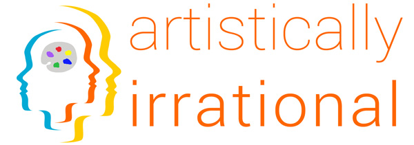

“The unknown, the mysterious, is where art and science meet.” – Albert Einstein

Inside the bubble of academia that houses the Center for Advanced Hindsight, we welcome a refreshing break to look up from our computers and try on a fresh perspective from the outside world. And what better place to look than the art community?
Behavioral research, an indispensable tool for social scientists, can be used to understand and comment on our lives. Controlled experiments allow us to measure and reflect on issues ranging from inequality to advertising, the taste of beer to medical conflicts of interest, and social networks. It is a fantastic way to test whether our intuitions about the world are true and figure out when, how, and why we are wrong. And although there are many differences between the worlds of Science and Art, both can provide useful social commentary. Interestingly, it is these very differences that invite a discussion between the two. We hope that, through this project, the scientific and artistic approaches can fertilize one another and open the lines of communication among two fields that have so much in common, but speak to one another so rarely.
The Artistically Irrational exhibit series is essentially an experiment in feedback loops, an exploration of the dialogue between science and art. Each project begins with a discussion of the social science research (on the nature of dishonesty or inequality, for example) and a request for artists to reflect on the topic through their art. The artists then provide us with their output, and we can further reflect on our research through their eyes.
For more information about the Artistically Irrational exhibition series, contact curator Catherine Howard at artisticallyirrational@gmail.com.
Thirty-four artists were invited to create innovative and engaging artwork after a stimulating discussion on social and economic inequality, wealth distribution, and what is so taxing about taxation.
Some chose to explore how to visualize analytical data. Suzanne Broughel used color to interpret the U.S. racial wealth gap by decorating a white bed sheet “canvas” with coin marks made by dipping quarters and pennies in liquid foundation makeup and pressing them on the fabric. Peter Lisignoli, an MFA student at Duke University, became interested in how one represents the absence of food. He photographed a Quick-n-Go market to rethink how space and time are rendered by such a space. Despite his efforts to tackle the social issue of food inequality, his project changed focus toward the ghettoizing gaze of the surveillance camera. Jody Servon's piece attracted much attention and even a bit of controversy with her wall of dollar bills.
Other artists explored the capacity for art to spark an emotional response to the research presented by the Center for Advanced Hindsight. Leslie Salzillo’s “The Rise of Soraya M (What Does that Make Her?)” honors all women who have suffered small and great injustices created by the unequal legal and social double standards misinterpreted to dehumanize women.
At the Center for Advanced Hindsight, we do quite a bit of research on cheating and dishonesty. We spoke to a group of artists who, research on their minds, went back to their studios to put together their interpretations of our findings. And they came back with a range of pieces, from depictions of dishonesty in their work to the embodiment of straddling the moral line themselves through various degrees of artistic “borrowing,” some less scrupulous than others. One artist played with the idea of citation, which is virtually nonexistent in art but is a practice with rigid requirements in the sciences (APA, 2010). Another considered how the mere label of “art” affects how we experience something, whether it is a flattened steel grid or a topsy turvy urinal. Other artists examined the spiral of bad decisions that can spring from one little transgression. And how moral reminders or cleansing rituals can help us correct our misdeeds and start over. Many explored the ways that we lie to others and ourselves, how we hold distorted worldviews and memories – and the rationalizations that go along with them.
All of these pieces revolved around a central finding of our research – the tendency of creatives to be less honest than non-creatives. And as David Hockney said, “the moment you cheat for the sake of beauty, you know you're an artist.”